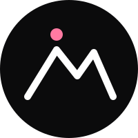
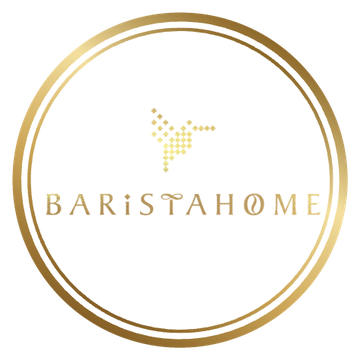
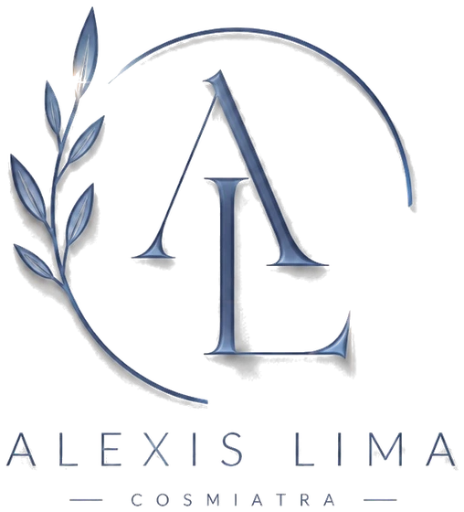

Negocios independientes a los que ayudamos a digitalizar su marca y su presencia — cada uno con su propio problema y su propia solución. Haz clic en cualquier tarjeta para ver el caso completo.

Distribuidora cultural dedicada a la difusión, distribución y exposición de artistas mexicanos independientes.
Ver caso →
Cafetería de especialidad con desayunos, comidas y cenas en Anzures, Puebla.
Ver caso →
Consultorio de cosmiatría en Puebla, especializado en tratamientos faciales y corporales.
Ver caso →Bar deportivo en azotea, con ambiente social, pantallas para cada partido y coctelería de autor.
Ver caso →Taquería de barrio con recetas caseras, al carbón y con el sazón tradicional en cada taco.
Ver caso →Distribuidora cultural dedicada a la difusión, distribución y exposición de artistas mexicanos independientes.
Visitar sitio en vivo →Cerro Rosa es una distribuidora cultural que apoya la difusión, distribución y exposición de artistas mexicanos independientes — un canal de descubrimiento de arte y artistas, con reportajes y ensayos donde el arte es el eje principal. Su concepto y su filosofía ya estaban muy bien definidos desde antes de contactarnos.
Aunque el concepto ya estaba muy claro, Cerro Rosa todavía no tenía definida su estética visual, y mucho menos un sitio propio donde alojar toda la base y operación de su distribuidora — su catálogo de artistas, sus historias y reportajes, y un canal digital que se sintiera genuino y verdaderamente representativo, tanto para el público como para los propios artistas.
Una estética propia y honesta con la filosofía de la distribuidora, que antes no estaba definida.
Toda la base y operación de la distribuidora alojada en un solo lugar, con cada detalle solicitado por el cliente.
Perfiles de artistas mexicanos independientes, listos para explorar y descubrir.
Un espacio editorial propio donde el arte es siempre el eje principal.
Actualizaciones y modificaciones periódicas — seguimos trabajando juntos después del lanzamiento.
Hoy Cerro Rosa tiene un canal digital propio, genuino y representativo, para la difusión y el descubrimiento de arte y artistas mexicanos independientes — y seguimos trabajando juntos: el mantenimiento y las modificaciones periódicas del sitio son parte continua del proyecto.
Cafetería de especialidad con desayunos, comidas y cenas en Anzures, Puebla.
Visitar sitio en vivo →Barista Home coffee & brunch es una cafetería de especialidad en Anzures, Puebla, con desayunos, comidas y cenas. Su menú impreso —diez páginas bien diseñadas, con una paleta e identidad propia ya definida— era la base de toda su experiencia en mesa.
El menú de Barista Home solo existía en papel y en un archivo de Canva: sus clientes no podían consultarlo antes de llegar ni desde la mesa, y la única referencia en línea eran fotos que otros comensales subían a Google Maps, tomadas en ángulo y con reflejos del enmicado, difíciles de leer. Cualquier cambio de precio, además, obligaba a reimprimir todo el menú.
Transcribimos más de 150 productos a partir de fotos del menú físico y del diseño original en Canva, cruzando ambas fuentes para corregir precios desactualizados y completar tamaños faltantes.
Replicamos la paleta exacta del menú impreso —azul, caramelo, dorado y crema—, el fondo de cada sección y las fotos de producto integradas sin recortes, con las tipografías elegantes de su Instagram.
Barra de categorías fija que resalta la sección visible, precios por tamaño alineados como en el menú físico, y la promoción de desayuno siempre destacada.
Imágenes separadas del código para una carga rápida (el HTML pesa solo 30 KB), con el desplazamiento corregido en iPhone y Android.
Un QR con los colores y el logotipo del negocio, con máxima corrección de errores y probado en distintos tamaños — listo como tarjeta de mesa y en versiones PNG y SVG.
Publicado en GitHub Pages sin costo de hospedaje, con instrucciones para que el negocio actualice precios y fotos por su cuenta, sin reimprimir el QR.
Barista Home ahora tiene un menú digital siempre actualizado y fiel a su marca, que sus clientes consultan desde el celular con un solo escaneo, y que el propio negocio puede mantener sin depender de reimpresiones.
Consultorio de cosmiatría en Puebla, especializado en tratamientos faciales y corporales.
Visitar sitio en vivo →Alexis Lima es cosmiatra en Puebla, especializada en tratamientos faciales y corporales. Su marca —un monograma elegante en tonos azul acero— ya existía, pero todavía no tenía un sitio propio donde reflejarla.
Antes de trabajar con nosotros, Alexis no tenía una página web propia: su presencia era solo en redes sociales, donde cada paciente nueva tenía que escribir por mensaje directo para preguntar qué tratamientos ofrecía y cuánto costaban, sin ningún catálogo visual que le permitiera cotizar de forma clara antes de escribir. No había un espacio propio que transmitiera, desde antes de la primera cita, la confianza y la calidad que un consultorio de cosmiatría necesita.
Un sitio completo, ya en funcionamiento, fiel a los tonos y al monograma que representan a Alexis Lima.
Un catálogo visual con cada tratamiento, para que los pacientes puedan cotizar de forma clara antes de escribir.
Códigos QR que llevan directo al catálogo y a la agenda, listos para usar en el consultorio.
Un botón directo para agendar cita, sin depender de mensajes perdidos en redes.
Una digitalización completa de su propuesta, que respalda la reputación del consultorio desde el primer clic.
Hoy cualquier persona interesada puede conocer los tratamientos y el estilo del consultorio antes de escribir, y agendar su cita directo por WhatsApp — con un sitio que ya refleja la misma calidad que reciben en consulta.
Bar deportivo en azotea, con ambiente social, pantallas para cada partido y coctelería de autor.
Visitar sitio en vivo →Ceiba 25 es un bar deportivo en una terraza con vista al mar, pensado para ver cada partido en un ambiente social, con coctelería de autor y una experiencia que va más allá del menú.
Ceiba 25 nos contactó siendo un negocio que apenas arrancaba: no tenía marca, ni menú, ni ningún tipo de presencia digital. Necesitaban construir todo desde cero para abrir sus puertas ya con lo último en tecnología, en lugar de depender de un menú físico y de la atención del mesero para cada ronda, sin un canal directo de pedido ni una experiencia pensada para un público que también incluye visitantes de otros países.
Diseño de identidad completa: logo, colores y personalidad visual, pensados desde el primer boceto.
Un menú visual y fácil de leer, con fotografía real de cada platillo.
Acceso instantáneo al menú completo desde cualquier mesa, sin reimprimir nada.
El mismo menú, disponible para todo tipo de público.
Botón de pedido directo, sin esperar a que un mesero tome la orden.
Hoy, cualquier cliente de Ceiba 25 escanea el código en su mesa y ve el menú completo —con fotografía real de cada platillo— en el idioma que le resulte más cómodo, y puede pedir directo por WhatsApp sin esperar a que un mesero tome la orden. Un menú que se actualiza al instante, sin reimprimir nada.
Taquería de barrio con recetas caseras, al carbón y con el sazón tradicional en cada taco.
Visitar sitio en vivo →Súper Taquería "El Kuñado" es una taquería en San Baltazar, Puebla, especializado en tacos árabes: una receta casera y un sazón tradicional que se ha ganado la fidelidad de sus clientes taco a taco, boca a boca. Su marca —el mismo diseño desde hace más de 30 años— llevaba igual de tiempo sin renovarse.
Antes de trabajar con nosotros, "El Kuñado" no tenía ninguna presencia digital: ni menú en línea ni una forma de compartir precios o promociones más allá del boca a boca y el letrero del local. Un cliente nuevo no podía saber qué pedir ni cuánto costaba antes de llegar, y cada pedido para llevar dependía de una llamada telefónica. Además, su marca no había cambiado en más de tres décadas y ya no reflejaba la calidad que mantienen en cada taco.
Un menú completo, con precios y promociones, accesible al instante escaneando un código desde el celular.
Actualizamos el diseño de su marca original -sin cambios en más de 30 años- conservando su esencia pero con un acabado moderno.
Un botón directo para pedir sin necesidad de llamar ni esperar turno.
Todo el menú se lee cómodo desde el teléfono, que es como casi todos sus clientes lo consultan.
Hoy "El Kuñado" comparte un solo enlace —o un código QR pegado en el local— y cualquier cliente ve el menú completo, con precios claros, y puede pedir directo por WhatsApp. Sin llamadas perdidas ni pedidos mal anotados.